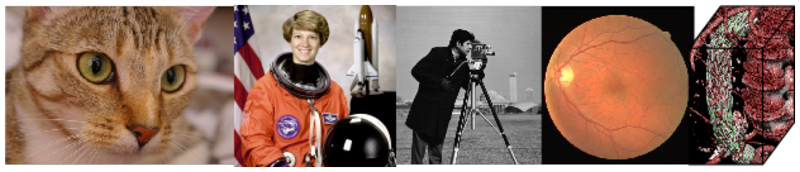

Images¶
import numpy as np
import matplotlib.pyplot as plt
plt.imshow(np.random.random((100,100)))
<matplotlib.image.AxesImage at 0x7f11e8febb90>
import matplotlib.pyplot as plt
import imageio
import torch
import torchvision
from torchvision import models, transforms
import numpy as np
from torchvision.models import *
from PIL import Image
import requests
from torchvision import models
from torchsummary import summary
import numpy as np
from skimage import io as io
import matplotlib.pyplot as plt
from scipy import signal
import torch.nn.functional as F
from torch.nn.functional import *
import torch
import torch.nn as nn
import torchvision
import torchvision.transforms as transforms
import time
from matplotlib import animation, rc
from IPython.display import HTML
rc('animation', html='html5')
def plot(x):
fig, ax = plt.subplots()
im = ax.imshow(x,cmap='gray')
ax.axis('off')
fig.set_size_inches(20, 20)
plt.show()
f = np.random.random((3,3))
f
array([[0.98365083, 0.68436321, 0.65398755],
[0.51668955, 0.64287567, 0.50420949],
[0.87284679, 0.03526824, 0.33659719]])
im = imageio.imread('https://raw.githubusercontent.com/imageio/imageio-binaries/master/images/imageio_banner.png')
plot(im)
